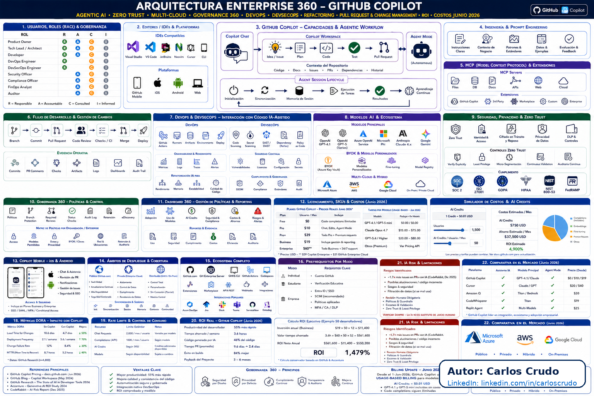

Licenciamiento
Free, Student, Pro, Business y Enterprise como base del examen.
Este sitio reúne el contenido del workbook del proyecto, la arquitectura 360, las buenas prácticas de prompt engineering y los escenarios de examen que debes dominar para certificarte con confianza.
Objetivo de certificación
La preparación no se limita a repetir teoría: debes saber elegir el plan correcto, usar Copilot con contexto, validar respuestas, proteger privacidad y aplicar gobernanza responsable en proyectos reales.
Free, Student, Pro, Business y Enterprise como base del examen.
Instrucciones por repositorio, path y agentes para controlar calidad y contexto.
Revisión humana, políticas, privacidad, auditoría y uso responsable.
Preguntas tipo test, escenarios y validación antes de aceptar una sugerencia.
| Plan | Referencia | Uso recomendado |
|---|---|---|
| Free | Inicio sin costo | Aprender, practicar y validar conceptos básicos. |
| Student | Verificación educativa | Laboratorios y estudio académico con enfoque de aprendizaje. |
| Pro / Pro+ | Usuario avanzado | Desarrollo individual con más capacidad y contexto. |
| Business | USD 19/user/mes | Organizaciones que necesitan políticas y control. |
| Enterprise | USD 39/user/mes | Gobierno avanzado, auditoría y adopción corporativa. |
Referencia extraída del workbook: 1 AI Credit equivale a USD 0,01 y se usa como referencia de consumo y FinOps.
| Patrón | Cómo aplicarlo | Resultado esperado |
|---|---|---|
| .github/copilot-instructions.md | Definir arquitectura, naming, tests y seguridad del repo. | Respuestas consistentes y alineadas al proyecto. |
| .github/instructions/**/*.instructions.md | Usar por carpeta o dominio (src, docs, infra). | Contexto más preciso y menos ruido. |
| AGENTS.md / CLAUDE.md / GEMINI.md | Establecer pasos, límites y validaciones para agentes. | Menos ejecuciones fuera de alcance. |
| Políticas de organización | Auditar permisos, modelos y acceso por equipo. | Control, trazabilidad y seguridad empresarial. |
La preparación GH-300 evalúa la capacidad de usar Copilot con responsabilidad, no solo la velocidad de generación.

Esta imagen forma parte del material de estudio del proyecto y representa el enfoque 360: licenciamiento, seguridad, modelos, agentes, mobile y gobernanza.
flowchart LR
A[Estudiante / candidato GH-300] --> B[VS Code + GitHub Copilot]
B --> C[App de práctica y workbook]
C --> D[Prompt engineering]
C --> E[Pruebas y validación]
C --> F[GitHub, reviews y gobernanza]
D --> G[Respuesta responsable]
E --> G
F --> H[Preparación para examen]
El flujo de estudio combina documentación, pruebas, prompts y revisión de cambios para reproducir un entorno real de preparación profesional.
Laboratorios DPCP-010 (español)
Esta guía está organizada por número de laboratorio para que puedas avanzar de forma secuencial y clara en tu preparación GH-300 y GitHub.
Temas que cubre: crear un repositorio desde plantilla pública, crear ramas (branches), repositorios públicos vs privados, flujo de trabajo con ramas y práctica de colaboración en GitHub.
Ejercicio guía: crea el repositorio skills-introduction-to-github, busca una rama llamada Mi-Primera-Rama y créala desde main. La rama activa cambiará automáticamente a la nueva rama creada.
Objetivo didáctico: aprender los fundamentos de GitHub para contribuir con confianza a proyectos, colaborar con equipos y participar en comunidades de desarrollo.
Temas que cubre: crear repositorio desde plantilla, pull request y comparación de cambios, cabeceras Markdown (H1-H6), commit de cambios documentados, y comunicación efectiva en proyectos colaborativos.
Objetivo: Imagina que estás trabajando en un proyecto colaborativo con tu equipo de desarrollo. La comunicación y la organización son clave para garantizar el éxito del proyecto. Markdown es una herramienta crucial para desarrolladores como tú para mejorar la claridad y la organización en tu comunicación, especialmente al tratar con problemas y pull requests.
Ejemplo práctico: crea un README bien organizado con H1-H6, describe la mejora en un PR y usa mensajes de commit que expliquen por qué cambió el proyecto.
Temas que cubre: GitHub Pages, configuración del sitio, Jekyll como generador estático, publicación desde repositorio GitHub y creación de un portfolio profesional online.
Objetivo: Imagina que eres un desarrollador de software en ciernes en una startup tecnológica, deseando mostrar tus proyectos, habilidades y experiencias a través de un portafolio online. Quieres una plataforma profesional para mostrar tu trabajo, así que decides crear una página web o blog personal usando GitHub Pages. Esta plataforma te permite aprovechar los repositorios de GitHub para publicar y mantener fácilmente tu sitio web.
Temas que cubre: revisión de pull requests (code review), resolución de conflictos de merge, estrategias de fusión: merge, squash, rebase, y branch protection rules.
Objetivo: Imagina que formas parte de un equipo de desarrollo trabajando en un proyecto con colaboradores múltiples. A medida que se hacen cambios, es fundamental revisarlos y asegurarse de que el trabajo de todos se integre sin problemas. Tú necesitas colaborar eficazmente gestionando las pull requests y resolviendo conflictos de fusión para mantener la integridad del proyecto y evitar interrupciones.
Esta página está alineada con el taller de desarrolladores DPCP-010 GitHub y GitHub Copilot y resume una ruta de 23 laboratorios previstos para avanzar de forma organizada en GitHub, Copilot, revisión de código, seguridad y certificación GH-300.
Los laboratorios están numerados y etiquetados para que el recorrido sea fácil de seguir desde el 01 hasta el 23.
Crear un repositorio, trabajar con ramas y entender flujos básicos de colaboración.
Documentación estructurada, pull requests, comparación de cambios y commits claros.
Publicar un sitio con GitHub Pages, Jekyll y un portfolio profesional online.
Revisión de código, estrategias de fusión y resolución de conflictos.
Usa Copilot para revisar cambios, resumir PRs y reforzar buenas prácticas de colaboración.
Evalúa privacidad, límites, auditoría, políticas y control de uso responsable.
Explora flujos de agente, MCP, cambios por lotes y automatización controlada.
Resuelve preguntas tipo examen, revisa errores frecuentes y valida la preparación final.
La secuencia continuará hasta completar los 23 laboratorios previstos para el taller.
docs/gh300-study-guide.md.docs/exam-scenarios.md.npm test para validar la lógica del laboratorio.npm start y repasa cada bloque como preparación para examen.